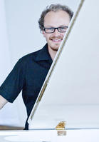

Willkomm!

Grüß Gott, meine sehr verehrten Damen und Herren,
dovolte, abych se představil. Mein Name ist Michael Färber, ich bin Jahrgang 1989 und Doktorand in der Gruppe Computational Logic am Institut für Informatik an der Universität Innsbruck. Mich interessiert insbesondere die Schnittstelle zwischen Mathematik und Informatik, also die Logik und die funktionale Programmierung, letztere bevorzugt in der Sprache Haskell.
Nebenbei interessieren mich auch natürliche Sprachen; par exemple, je parle français depuis mon séjour Erasmus à Bordeaux, io parlo anche italiano perché ho fatto un Giro d’Italia in bici, a učím se česky protože můj dědeček je z Brna a Česká Republika má dobré pivo. ;)
Außerdem spiele ich Klavier und singe im Unichor, gehe gerne auf den Berg (nonaned), spiele Tischtennis und ehre die Siesta.
Neueste Beiträge
Mehr gibt es auf der dedizierten Blog-Seite.